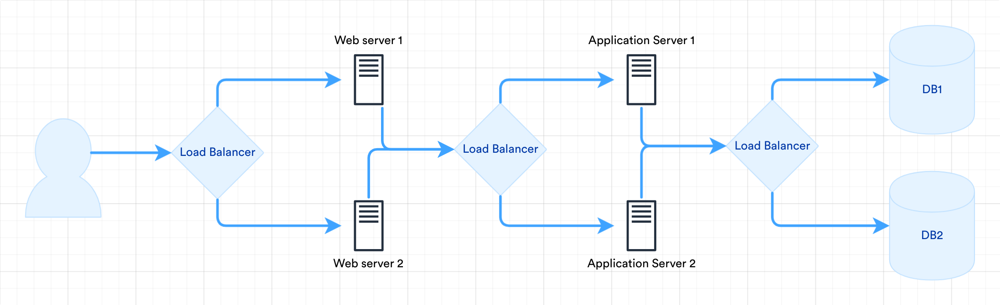
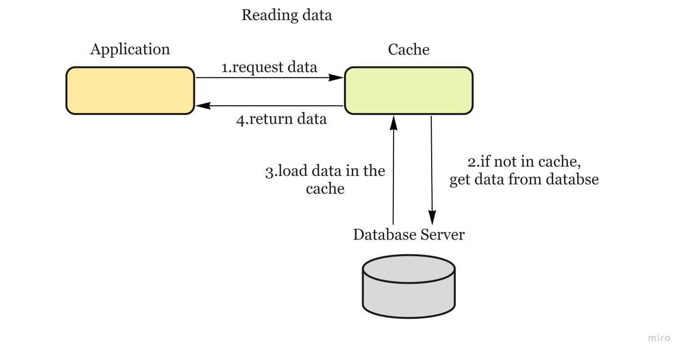
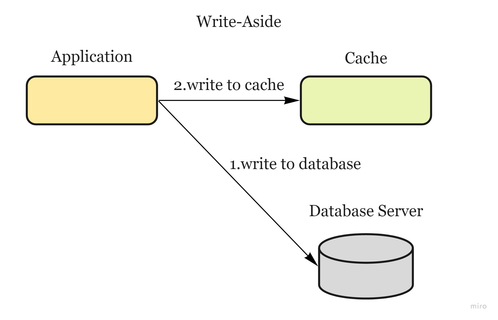
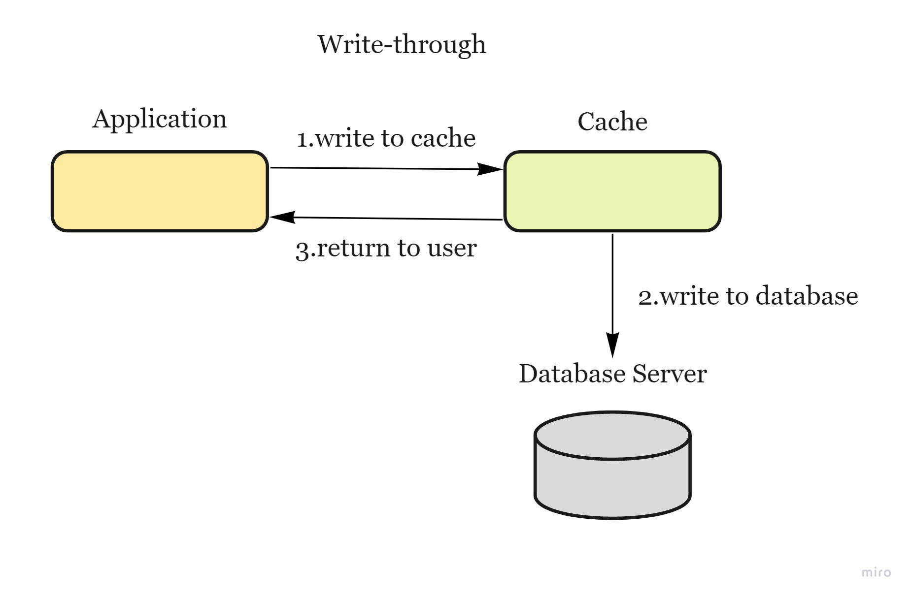
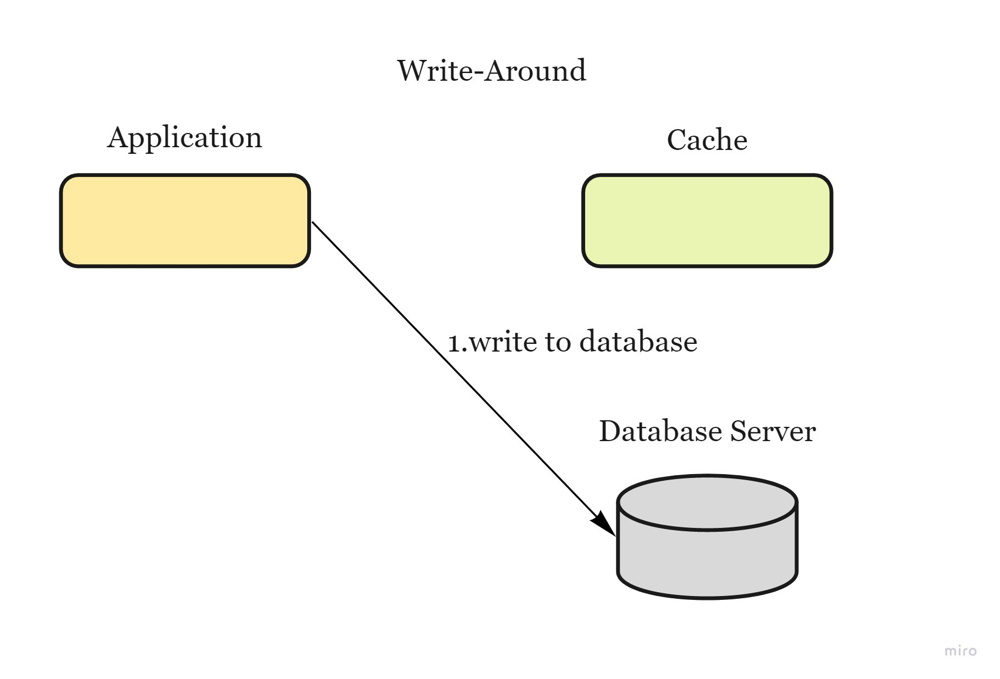

System Design Interview Cheatsheet
Contents
System Design Interview Cheatsheet¶
The Interview¶
Usually 45-60 minutes.
Approach¶
GATHERING REQUIREMENTS
“Goal” of the system?
“Users” of the system?
Why do users need the system?
How will users interact with the system?
Scope
List down all the features of the system
SCALE
How many “DAUs” system need to serve?
How many “transactions per unit-of-time”?
Performance requirements (Availability, throughput, latency, consistency)?
Expected “read:write” ratio?
Expected response time (latency?)?
DESIGN HLD
What type of DB and why?
What are the “available offerings” in the market?
“Trade-offs” for choosing a particular technology.
DRILL-DOWN
Start with the components you’re most familiar with.
WRAP-UP
Summarize the solution
List down important “bottlenecks”
List down improvements “opportunities”
Distributed System overview¶
Group of computers working together to appear as a single computer to the end user.
They have shared state
Operate concurrently
Can fail independently without affecting the whole system’s uptime
Key Characteristics¶
TODO
Components¶
Load Balancer¶
Component that acts as a reverse proxy and distributes network or application traffic across a number of servers to improve responsiveness and availability of applications, websites or databases.

Algorithms
Least Connection
Least response time
Least bandwidth - most free / serving least traffic
Round Robin
Weighted Round Robin - based on capacity (processing, IO etc)
IP Hash
Cache¶
When to use it: Data read frequently but modified infrequently
Considerations¶
Expiration policy
Consistency with the Database
Distributed Cache (to avoid single point of failure)
Eviction policy
Concurrency - reader-writer problem
solution could be write back or commit-logs
Reading from Cache¶

Updating the Cache¶
  Write-aside cache — data is written into the cache and the corresponding database at the same time (also known as lazy loading) — cons: higher latency
Write-through cache — application adds or updates an entry in the cache. Cache synchronously writes entry to the data store. Cache returns the data to the application.
Write-around cache — data is written directly to permanent storage, bypassing the cache — cons: read request for recently written data will create a “cache miss”.
Write-back cache — data is written to cache alone and completion is immediately confirmed to the client and then data is asynchronously updated to the data store — pros: low latency and high throughput; cons: risk of data loss in case of a crash
Cache Invalidation¶
Eviction Policies¶
First In First Out (FIFO) — evicts the first block accessed first
Last In First Out (LIFO) — evicts the block accessed most recently
Least Recently Used (LRU) — evicts the least recently used items first. When the client requests resource A, it happens as follow:
If A exists in the cache, we just return immediately.
If not and the cache has extra storage slots, we fetch resource A and return to the client. In addition, insert A into the cache.
If the cache is full, we kick out the resource that is least recently used and replace it with resource A.
Most Recently Used (MRU) — evicts the most recently used items first
Least Frequently Used (LFU) — counts how often an item is needed. Those that are used least often are discarded first.
Random Replacement (RR) — randomly evicts a candidate item
Concurrency¶
CDN¶
Message Queues¶
Message Queueing¶
Used to decouple producer from consumer
Can be used for event-based intra-service communication, consumer listens for events in queue
Publish/Subscribe¶
Used in
Notification systems
Backend jobs which takes time
Actions that trigger multiple services
Provides
loose coupling
fault tolerence
retry
Configuration Services (Zookeeper)¶
Used to manage cluster of servers, databases or caches. External services can interact with clusters via zookeeper. Zookeeper names services, knows their ips, elects leader, provides failure recovery.
API Gateway and Service Mesh¶
API Gateway |
Service Mesh |
|---|---|
Exposes external services to make them easily consumable |
Manages and controls services inside your network |
Maps external traffic to internal resources |
Focusses on brokering internal resources |
Exposes APIs or edge services to service specific business function |
Sits between network and application, no real business notion |
Layer 7, Popular example: Zuul |
Layer 4, Popular example: Istio |
Databases¶
NoSQL vs SQL¶
NoSQL |
SQL |
|
|---|---|---|
When to use |
large volumes of unstructured data, Rapid development |
need ACID compliance, structured and unchanging data |
Model |
Non-relational - JSON docs, key-value pairs, wide column stores, graphs |
Relational - tables |
Data |
flexibility - relationships are de-normalized, nested, in single record, on the fly property creation |
rigid - relationships are normalized using joins, addition of fields require alter and back-filling |
Schema |
Dynamic or flexible, DD is schema-agnostic, dictated by the application |
Strict schema. To be kept in sync between app and DB |
Transactions |
ACID support varies |
Supports ACID |
Consistency & Availability |
Strong consistency support |
Strong consistency enforced and prioritized over A&P |
Performance |
Can be maximized by reducing consistency. All entity info in a single record => updates in single operation |
Insert & update performance is dependent upon how fast a write is committed. Can be maximised by vertical scaling |
Scaling |
Horizontally |
Vertically |
NoSQL Types¶
Type |
Description |
|---|---|
Key-Value |
1-1 KV mapping. Key = String (hash value) Value = BLOB. No query language. They only allow to store, get/put/delete commands e.g. DynamoDB (Nike), Cassandra, Redis, Memcache, Manhattan (Twitter), Sherpa (Yahoo). Possible uses: session, shopping cart info etc |
Document |
Similar to a key-value db. Values = XML, JSON, BSON. Supports complex data - trees, collections, dictionaries. Doesn’t support relations. e.g. MongoDb (eBay), CouchDB (LinkedIn) |
Column |
Stores data in column families as rows. Each column family = container of rows where the key identifies the row & the row consists of multiple columns. Rows don’t need to have the same columns and columns can be added to any row. e.g. Cassandra (Instagram, Walmart), HBase (Salesforce, FB Messages, Imgur notifications) |
Graph |
Stores data in the form of nodes and edges where nodes = entities and edges = relationships. Stores data only once & a no. of different types of relationships can be stored in these nodes. Relationships can be uni and bi direcational (as in RDBMS). Adding new relationships is easy but changing existing ones is difficult. e.g. Neo4J, OrientDB, InfiniteGraph, FlockDB (Twitter), TAO (FB Social Graph) |
Sharding or Partitioning Data¶
Process of splitting up a DB/table across multiple machines to improve the manageability, performance, availability, and load balancing of an application
Partitioning Methods:
Horizontal Partitioning — put different rows into different tables — cons: unbalanced servers (if the value whose range is used for sharding isn’t chosen carefully)
Vertical Partitioning divide our data to store tables related to a specific feature in their own server (instagram use case — user profile information stored on one DB server, friend lists on another) — cons: if our application experiences additional growth, then it may be necessary to further partition a feature specific DB across various servers
Directory Based Partitioning — create a lookup service which knows your current partitioning scheme and abstracts it away from the DB access code.
Partitioning Criteria:
Key or Hash-based partitioning — apply a hash function to some key attributes of the entity we are storing — cons: adding new servers means changing the hash function which would require redistribution of data and downtime for the service. (use Consistent Hashing)
List partitioning — each partition is assigned a list of values, so whenever we want to insert a new record, we will see which partition contains our key and then store it there
Round-robin partitioning — With ’n’ partitions, the ‘i’ tuple is assigned to partition (i mod n).
Composite partitioning — combine any of the above partitioning schemes to devise a new scheme
Complexities:
Joins and Denormalization — not feasible to perform joins that span database shards (denormalize the database so that queries that previously required joins can be performed from a single table)
Referential Integrity — enforcing foreign keys in a sharded database can be extremely difficult. (not supported by most RDBMS — has to be enforced in application code.)
Celebrity problem — how would you deal with hotspots? (one way would be to add a shard for each celebrity) Rebalancing/Resharding — data distribution is not uniform and there is a lot of load on a shard => have to create more DB shards or have to rebalance existing shards.
Strategies:
Fixed number of partitions — Create many more partitions than there are nodes, and assign several partitions to each node
Dynamic partitioning — when a partition grows to exceed a configured size, it is split into 2 partitions so that approximately half of the data ends up on each side of the split (no of partitions adapt to the total data volume)
Partitioning proportionally to nodes — have a fixed no of partitions per node. The size of each partition grows proportionally to the dataset size while the no of nodes remains unchanged
Examples of Real World Scenarios:
Read about Tinder’s Geosharded Recommendations Part 1: Sharding Approach — Based on Google’s S2 which uses the Hilbert curve (=a space-filling curve that preserves spatial locality: two points that are close on the Hilbert curve are close in physical space. Each smallest Hilbert curve clone is a cell, and 4 adjacent cells form a bigger cell.) Create the geoshards by enumerating all the possible container sizes, and calculate the standard deviation of each sharding configuration, the one with smallest standard deviation will be the most balanced geo sharding configuration we are looking for.
Read about Uber’s Unwinding Uber’s Most Efficient Service — using a QuadTree — Take a flat projection of your search space and divide it into quarters that we’ll call cells. You then divide each of those cells into quarters recursively until you hit a defined maximum depth which will be the leaves of the tree.
Read about Instragram’s Sharding & IDs at Instagram
Replication¶
Reasons:
Latency — Keep data geographically close to your users (reduce access latency)
High availability — Allow the system to continue working even if some parts of it have failed
Scalability — Scale out the number of machines that can serve read queries
Leader-based replication:
One of the replicas is designated as the leader. When clients want to write to DB, they send their requests to the leader, which writes the data to its local storage
The other replicas (followers) receive the data from the leader in a process called replication log or change stream. When a client wants to read from the DB, it can query both leader/any of the followers.
Indexes¶
Data structure that improves the speed of data retrieval operations on a database table at the cost of additional writes and storage space to maintain the index data structure.
Basic DB Scaling Steps¶
Query optimization
Vertical scaling (powerful machine)
Master-slave (read replicas - read scaling)
Multi-master (write scaling)
Partitioning
Sharding
Multi-datacenter replication
ACID¶
Set of properties of database transactions intended to guarantee validity even in the event of errors, power failures, etc.
CAP¶
Scalability Calculation Numbers¶
Availability¶
99.99% - 50 minutes downtime / year
99.999% - 5 minutes downtime / year
99.9999% - 30 seconds downtime / year
Bandwidth¶
Average EC2 instance - 5Gb / sec
Throughput¶
Average server can process - 1000 req / sec
Max websocket connections - 65k (65,536)
Low end dedicated MySQL server (2 cores, 4GB RAM) can serve 100 req/sec on an average = 10 million/day with CPU idle rate of 90%
Real World Numbers¶
Approximation : 1 day ~ 86,400 sec => 1B DAUs => 11.5k req/sec
DAUs
Twitter - 200M/day (2.3k/sec)
Facebook - 2B (23k/sec)
Whatsapp - 200M (2.3k/sec)
Netflix - 200M (2.3k/sec)
Photos Uploaded
Instagram - 200M/day (2.3k/sec)
Videos uploaded
Youtube - 500hours / minute
Misc
Uber - 20 million trips / day = 230/sec
Bandwidth
For 2000 reads / sec, with each read of 10kb (10k chars) => 2Mb / sec